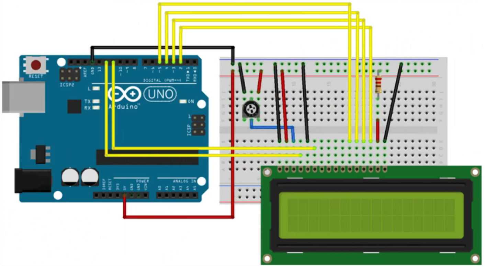
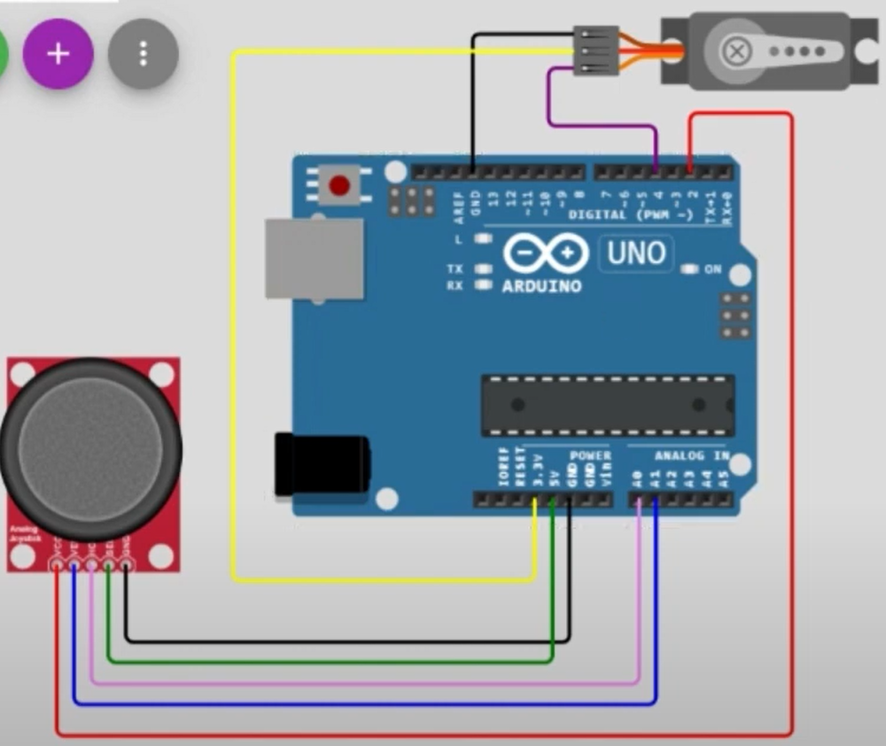
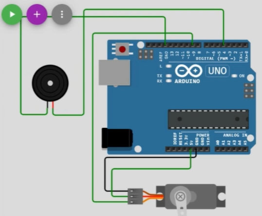

My Projects and Tutorials
Project Descriptions:
The Infinite Runner Game
This runner game utilizes key concepts in arrays (programming) and some basic circuitry. Below, there will be an attachment for a diagram along with a tutorial that you can follow along with. In this project, a button, resistor, and LCD display are connected. By connecting the power to the resistor to the LCD, it is able to power on and display the moving game. The game demonstrates aspects of scrolling by causing the character to moving right and making the player lose if the mini player sprite ever comes in contact with a barrier/obstacle.
Buzzer, button, LED memory Game
This project utilizes basic concepts of conditionals and arrays. The buzzer will sound if a player is unable to repeat the sequence back. With the addition of the buzzer, lights will flash and players must repeat back the sequence in order to advance to the next step where the sequence increases by 1 more light. There are corresponding buttons for each light. It is similar to Bop it or any other memory repeating games.
IR Remote Introduction
The Arduino sensor is able to detect IR signals from the IR remote and can use that data to display for the user or for other purposes. I created a system where the Arduino will detect what button is pressed and display it on the Arduino module. This project was just an intro so this idea can be expanded upon greatly.
Arduino Smart Car
Instead of using the Arduino tool box you need to use the Arduino Smart Car project box. Through a series of 3 videos, we walk through unboxing, analyzing, and creating the Arduino Smart Car. The smart car uses sensor modulus and can be controlled by an app on a phone or the IR remote. It can also follow a track such as black tape provided in the kit.
Motor Controlled by Joystick
The name is pretty self explanatory as the Arduino uses the data provided by the motor and joystick's position to move the servo motor. It uses the joysticks x and y values which can be used to calculate an approximate direction for the servo motor. In this project, if you move the joystick to the right, the motor head will move as well. Changes in y axis causes little change but still not as much as changes in x.
Other featured projects
{kind=link}
What you need for these projects:
- Arduino IDE
- Arduino UNO and wire
- Arduino UNO kit (LCD, servo motor, joystick etc.)
- Arduino Robot Car Kit
Where you can find each item
- Arduino IDE download: Download here!
- Arduino on Amazon: Buy here!
- Arduino kit with all modulus: Purchase from Amazon here!
- Arduino Robot Car: Found here, on Amazon!
- Try using the Arduino Nano, good for beginners: Purchase here!
Simple Project Tutorials:
Code and diagram
#include
// with the arduino pin number it is connected to
const int rs = 12, en = 11, d4 = 5, d5 = 4, d6 = 3, d7 = 2;
LiquidCrystal lcd(rs, en, d4, d5, d6, d7);
void setup() {
// set up the LCD's number of columns and rows:
lcd.begin(16, 2);
// Print a message to the LCD.
lcd.print("hello, world!");

delay(1000);
}
void loop() {
// scroll 13 positions (string length) to the left
// to move it offscreen left:
for (int positionCounter = 0; positionCounter < 13; positionCounter++) {
// scroll one position left:
lcd.scrollDisplayLeft();
// wait a bit:
delay(150);
}
// scroll 29 positions (string length + display length) to the right
// to move it offscreen right:
for (int positionCounter = 0; positionCounter < 29; positionCounter++) {
// scroll one position right:
lcd.scrollDisplayRight();
// wait a bit:
delay(150);
}
// scroll 16 positions (display length + string length) to the left
// to move it back to center:
for (int positionCounter = 0; positionCounter < 16; positionCounter++) {
// scroll one position left:
lcd.scrollDisplayLeft();
// wait a bit:
delay(150);
}
// delay at the end of the full loop:
delay(1000);
}
Code and diagram:
#include
Servo myservo; // class and our object name

int pos=0;
const int X_pin = A0; // analog pin connected to X output
const int Y_pin = A1; // analog pin connected to Y output
float posA;
float posAA;
void setup() {
Serial.begin(9600); // serial communication
myservo.attach(4); // defines which node is connected to the servo.
myservo.write(0); // writes the position to the servo
delay (1000);
}
void loop() {
myservo.write(posAA);
posA= analogRead(X_pin);
posAA= (posA*180.0/1023.0) ;
Serial.println((int)posAA);
Serial.println(pos);
}
Code and diagram:
#include "SR04.h"

int TRIG_PIN = 12;
int ECHO_PIN = 11;
int BUZZER_PIN = XXXXX; //Pin number for buzzer
SR04 sr04 = SR04(ECHO_PIN,TRIG_PIN);
long a;
void setup() {
Serial.begin(9600);
delay(1000);
pinMode(BUZZER_PIN, OUTPUT);
}
void loop() {
digitalWrite(BUZZER_PIN, LOW); //Turn off Buzzer
a=sr04.Distance();
Serial.print(a);
Serial.println("cm");
delay(500);
if (XXXXXXXX){ //Fill in the condition
XXXXXXXXXXXXX //Turn on the buzzer
delay(500);
}
}
My experience with the Arduino
There are various Arduino boards like the Uno, Nano, and Mega. It is an open-source hardware and software company, project, and user community that designs and manufactures single-board
microcontrollers and microcontroller kits for building digital devices. Paired with other modulus, you can create various new projects.
It is widely used in many areas, such as for weather monitoring, computing, gaming, and electronic equipment because of its low cost, modularity, and open design. It is typically
used by computer and electronic hobbyists, due to its adoption of the HDMI and USB standards. Compared to Arduino, it can do a lot more.
This board is similar to the Raspberry Pi in features and capabilities.It features the same 40-pin connector you’d normally find in the
standard Raspberry Pi 3 Model but offers a powerful processor and a GPU. In size, both computer boards are similar.
The Raspberry Pi